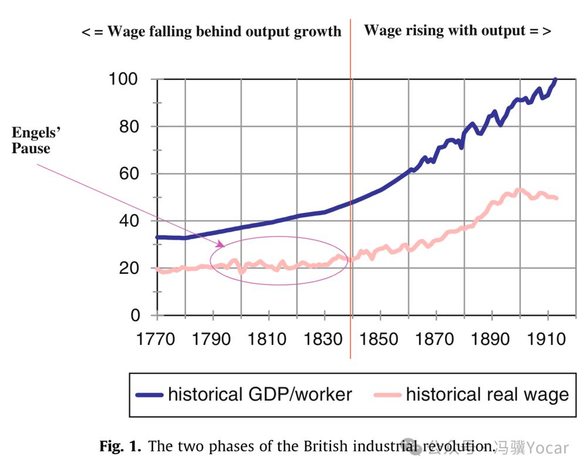

86科技/AI · 1
《黑神话：悟空》制作人冯骥发 8000 字长文谈「后 AI 时代」：如果有一天没有任何工作需要人了，人该怎么办？
11 月 27 日，游戏科学创始人、《黑神话：悟空》制作人冯骥在个人公众号发表约 8000 字长文《后 AI 时代最重要的问题》，提出当 AI 在生产端大规模取代人类劳动后，社会该如何看待人的价值。他认为这轮革命与历次工业革命有两点根本不同：一是「迁徙的高地没了」——算力正面攻占脑力本身，身后没有更高一层的「超脑力工种」可供转移；二是「淘汰的时钟加速了」——模型吞掉新技能的速度比人报班拿证快一个数量级。他主张从 AI 创造的超额社会财富中提取公共红利、按人头平均分配，社会不能只以生产端贡献衡量人的价值。文章发出后引发全网热议。
💡 点评一位头部游戏制作人把 AI 焦虑从「会不会抢饭碗」推进到「人的价值如何重新定义」，论证完整、值得一读原文。他提出全民分红的分配底线未必是答案，但「智力第一次脱离肉身、从劳动要素变成资本要素」这个判断足够锋利。
IT之家 · 原文 →